Recorded from the actual app with isolated sample data. No remote database changes.
A signed-out visitor sees the team invitation and login/register choices.
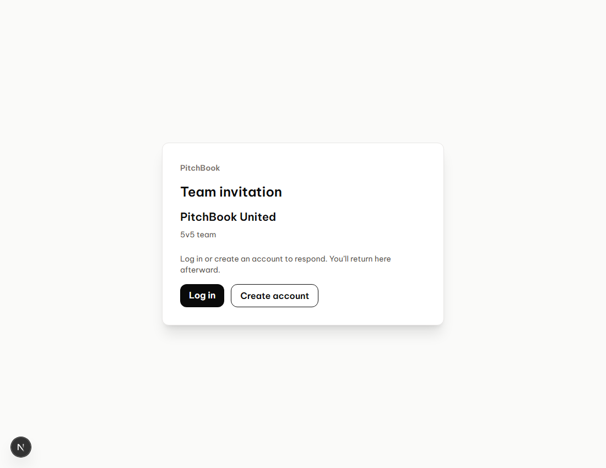
Registration signs the visitor in and returns directly to Accept or Decline.
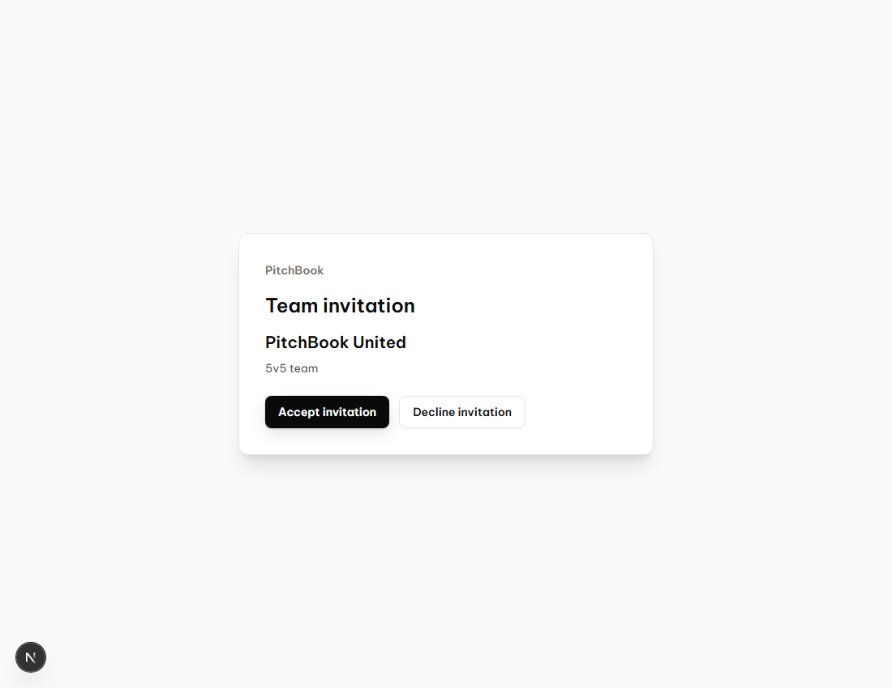
An explicit acceptance adds the new account to the team.
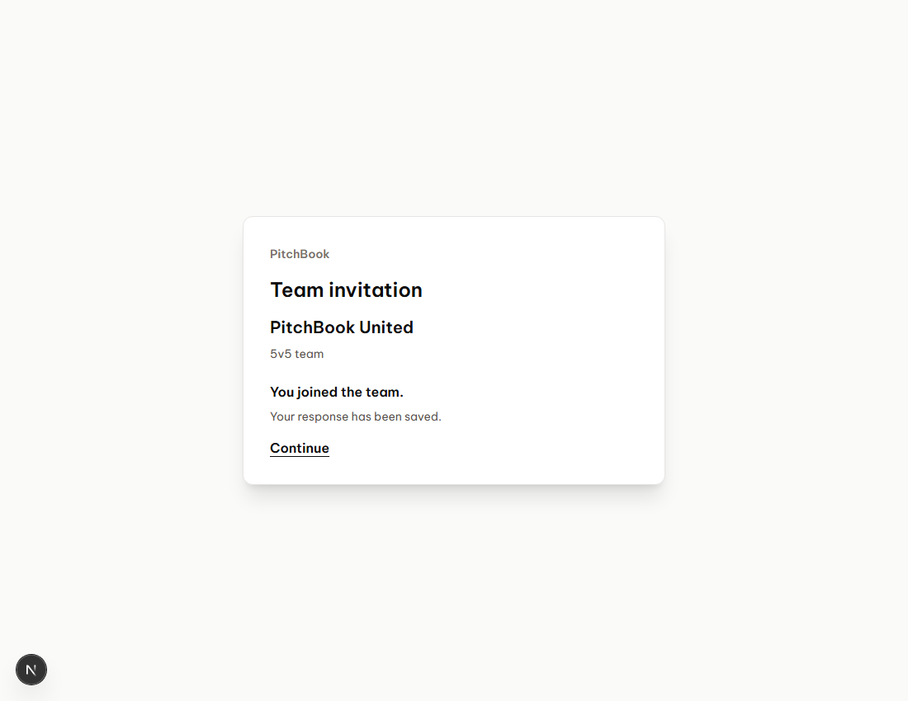
Team details show the single permanent invitation link with a Copy button.A new user without a team creates one within the match invitation, then can accept.
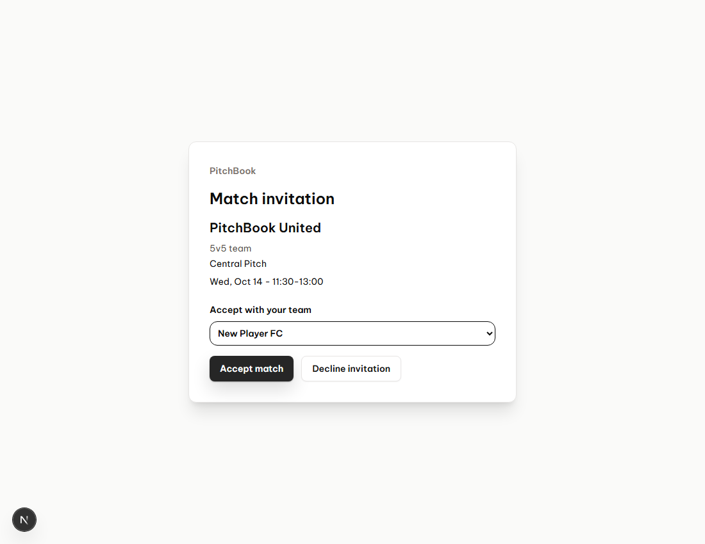
An existing user logs in, returns to the match request, and chooses a team they lead.
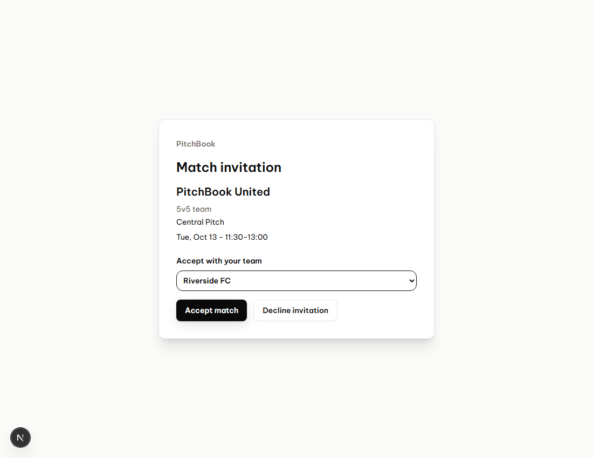
Accepting the request creates the match and participant bookings.
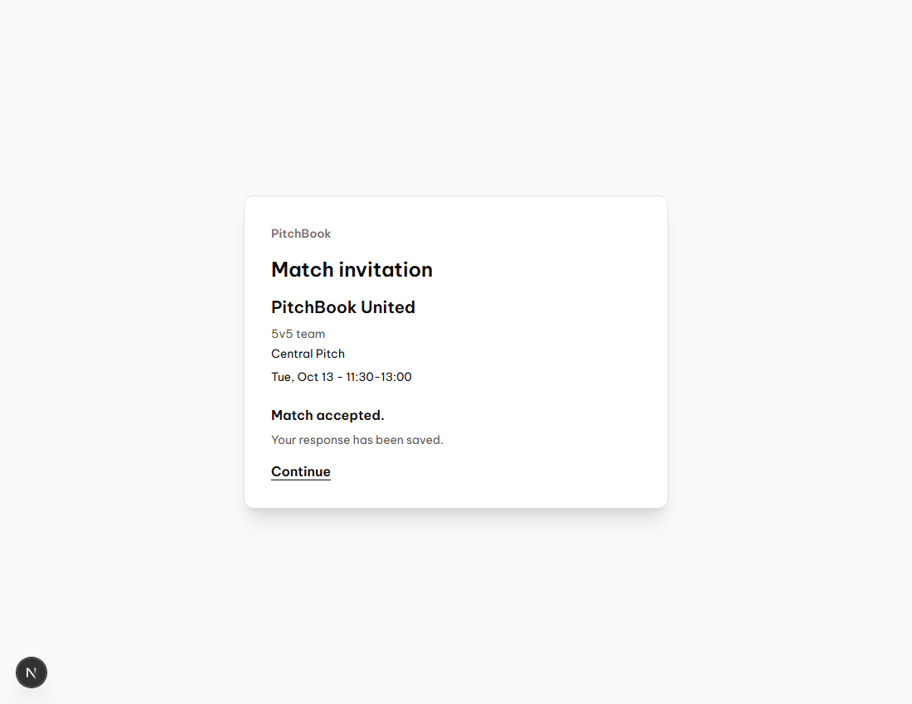
The lobby link joins the signed-in player using the normal capacity checks.
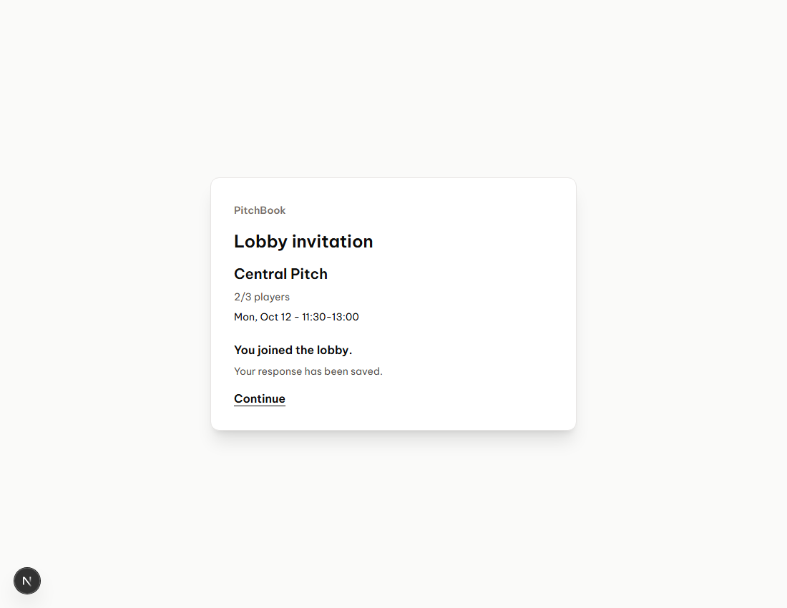
Declining records the response without creating a membership or booking.
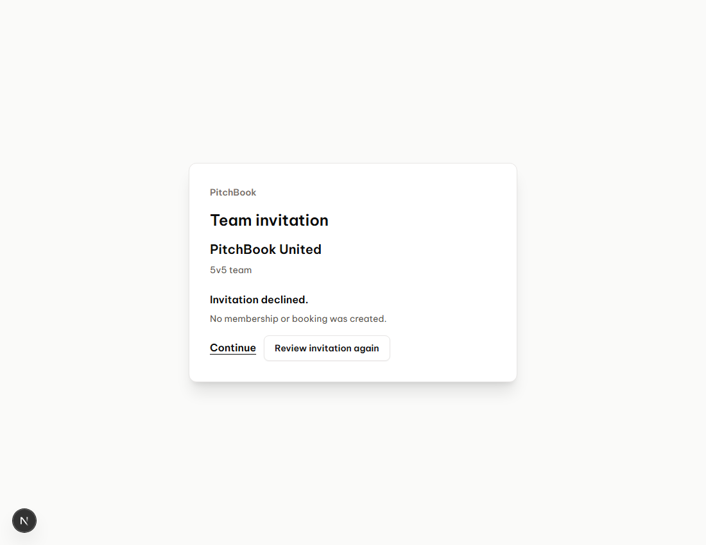
Links keep their URL but a canceled match request blocks acceptance.
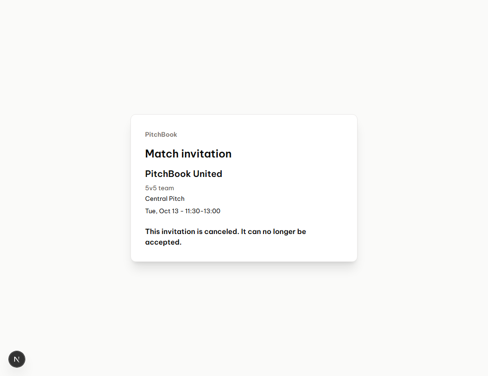
The invitation is usable on a narrow mobile screen.
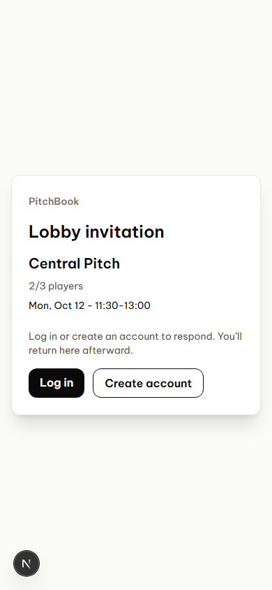
The owner sees the same permanent team URL; there is no invitation management dialog.
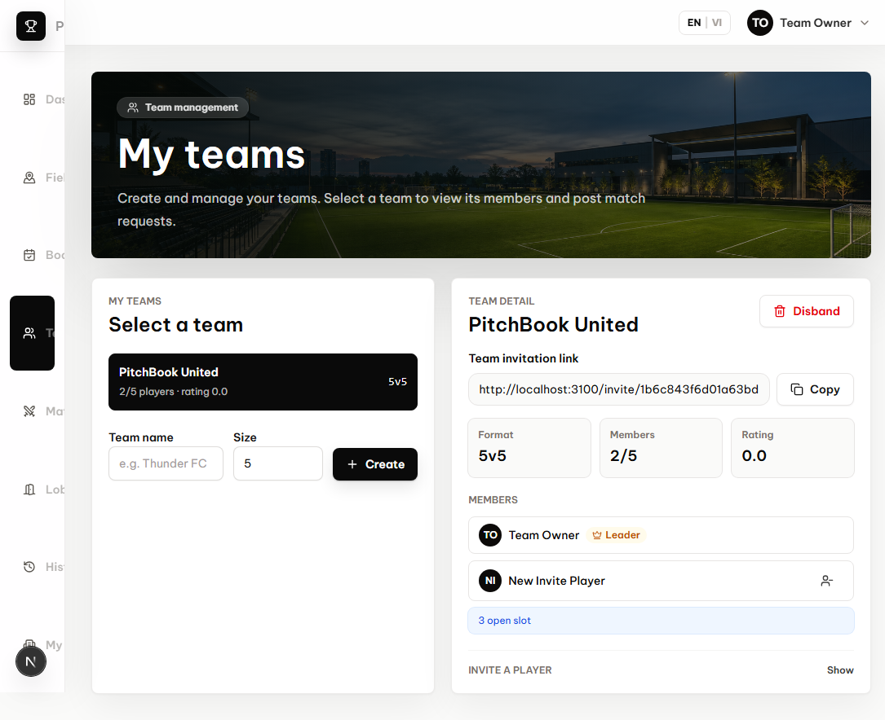
The lobby creator sees one stable join URL with a Copy button.
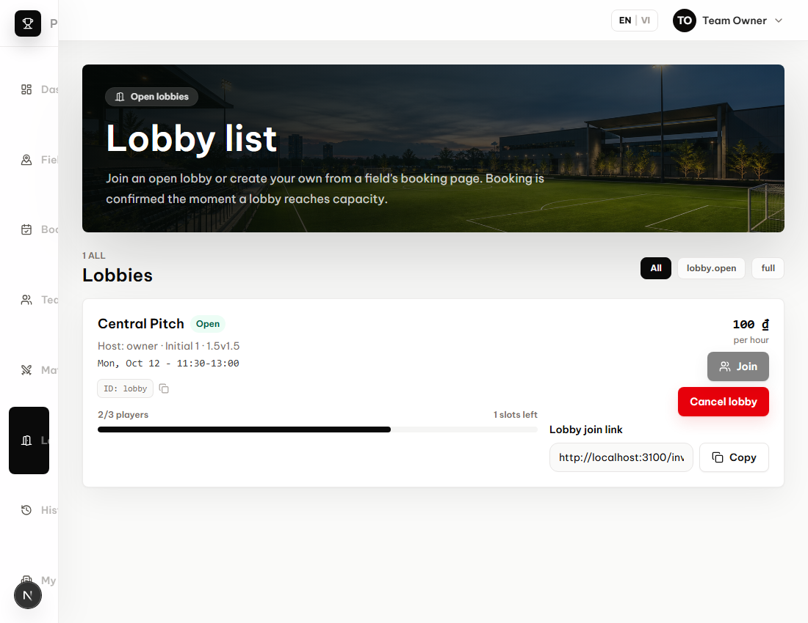
The posting team's leader sees one stable match-request URL with a Copy button.
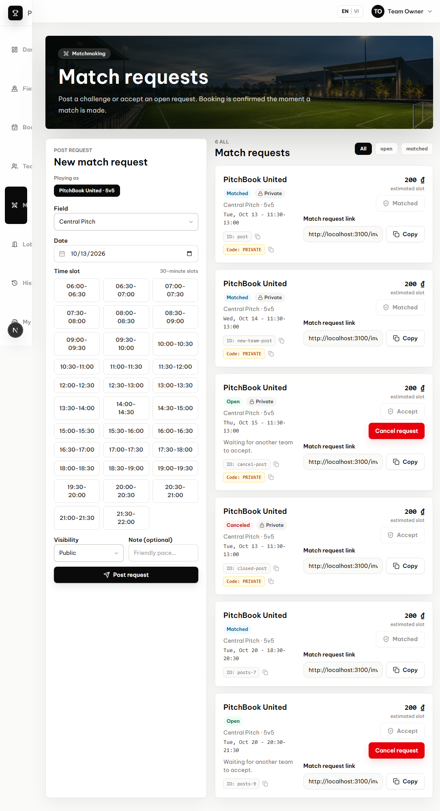
The posting team's leader can cancel an open request after confirmation.
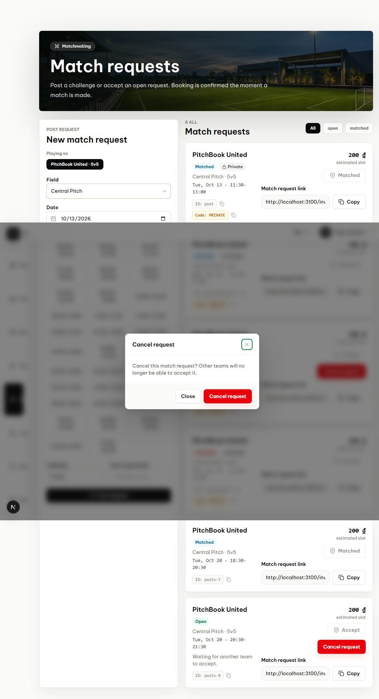
The request becomes canceled and can no longer be accepted.